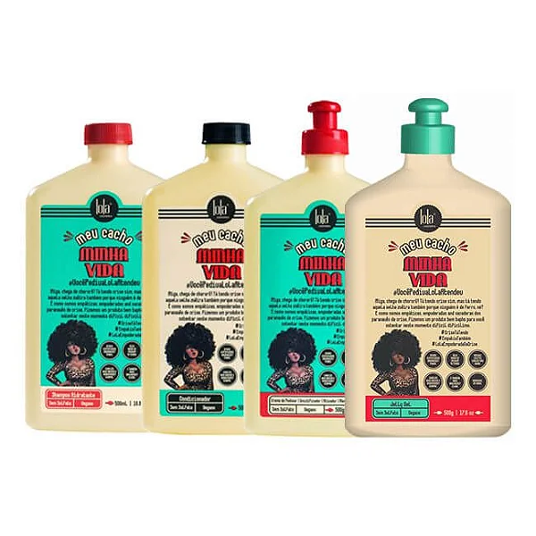

"Meu cacho, minha vida!"
Shampoo Hidratante de uso diário para nossas deusas! O Óleo de Patauá e os extratos vegetais presentes na fórmula promovem suavidade e maciez aos cabelos, aumentando a sua umidade natural e elasticidade.